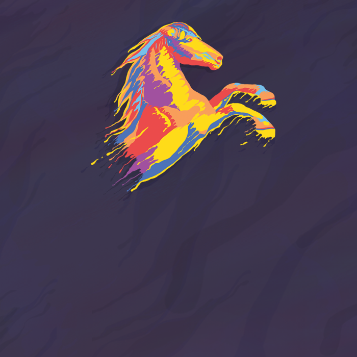

Projects

Mason Technology Ethics
How can students be better prepared to face the challenges of working with algorithms?
Explore the Project!
AIT 722 Project
The final deliverable for AIT 722, Theories and Models in Geo-Social Data Analytics
Explore the Project!

Office of Undergraduate Research Infographics
Infographics for the Office of Undergraduate Research at Cal Poly Pomona highlighting the impact of activities, programs, conferences and events.
Explore the Project!